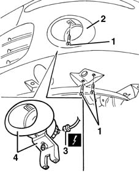
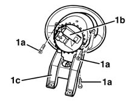

5540D10 l/h or r/h fog lamp (one) - r+r
- Path
- Procedures > 55 ELECTRICAL EQUIPMENT > 5540 EXTERIOR LIGHTING > 5540D FOG LAMPS > 5540D10 l/h or r/h fog lamp (one) - r+r
- Kind
- repair procedure (removal / refitting; the operation number is the code)
- Applies to
- all engines; production: fino a 05/99, da 09/03, da 06/99 a 03/02, da 04/02 a 08/03, fino a 05/04
- Interactive page
- https://sloeber94.github.io/elrnDB-fMltpl/en/#/2891937
Applies to: all engines; production: fino a 05/99, da 09/03, da 06/99 a 03/02, da 04/02 a 08/03, fino a 05/04
 Removing
Removing
 Refitting
Refitting1. Undo the bolts.
2. Move the fog lamp and support slightly.
3. Disconnect the electrical connection.
 | Name | Connector |
|---|---|---|
3 | Left fog lamp |
| Name | Connector |
|---|---|---|
3 | Right fog lamp |
4. Recover the fog lamp and support.

Applies to: all engines; production: fino a 05/99, da 09/03, da 06/99 a 03/02, da 04/02 a 08/03, fino a 05/04
1. If necessary, undo the bolts (1a) and separate the fog lamp (1b) from the support (1c).

Applies to: all engines; production: fino a 05/99, da 09/03, da 06/99 a 03/02, da 04/02 a 08/03, fino a 05/04
Refitting
RemovingTest the electrical operation of the fog lamp.
If separated, position the fog lamp on the support.
Connect the electrical connection.
Position the fog lamp in its housing.
Tighten the bolts.
If necessary, Carry out Op. 5540D38 fog lamp beam - adjust